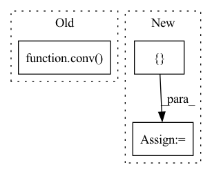

Pattern ID :3318

Before Change
out = self.fuse([x[i+1], inters[i+1], out]) // P4in + P4td + resize(P3td)
else:
out = self.fuse([inters[i+1], out]) // P7in + resize(P6td)
outputs.append(conv(out)) // P4out = conv(P4in + P4td + resize(P3td))
return outputs
After Change
outs[0] = tds[0]
for i in range(self.num_levels - 2):
outs[i+1] = self.out_fuses[i]([x[i+1], tds[i+1], self.downsample(tds[i])]) // P4in + P4td + resize(P3td)
outs[-1] = self.out_fuses[-1]([x[-1], self.downsample(tds[-2])]) // P7in + resize(P6td)
return outs
In pattern: SUPERPATTERN
Frequency: 3
Non-data size: 3
Instances
Fragment ID: 17233733
Project Name: gau-nernst/vision-toolbox
Commit Name: 0844b6bcb142e63b09cf6ae44e5087c20d52c380
Time: 2022-04-10
Author: gau.nernst@yahoo.com.sg
File Name: vision_toolbox/necks.py
M Class Name: BiFPNLayer
N Class Name: BiFPNLayer
M Method Name: forward(2)
N Method Name: forward(2)
M Parent Class: nn.Module
N Parent Class: nn.Module
M File Name: vision_toolbox/necks.py
N File Name: vision_toolbox/necks.py
M Start Line: 163
M End Line: 180
N Start Line: 160
N End Line: 172
'>
Before Change
v_img = rearrange(v_img, "B h (H W) Ch -> B (h Ch) H W", H=H, W=W) // Shape: [B, h, H*W, Ch] -> [B, h*Ch, H, W].
v_img_list = torch.split(v_img, self.channel_splits, dim=1) // Split according to channels.
conv_v_img_list = [conv(x) for conv, x in zip(self.conv_list, v_img_list)]
conv_v_img = torch.cat(conv_v_img_list, dim=1)
conv_v_img = rearrange(conv_v_img, "B (h Ch) H W -> B h (H W) Ch", h=h) // Shape: [B, h*Ch, H, W] -> [B, h, H*W, Ch].
After Change
v_img = v_img.transpose(-1, -2).reshape(B, h * Ch, H, W)
v_img_list = torch.split(v_img, self.channel_splits, dim=1) // Split according to channels
conv_v_img_list = []
for i, conv in enumerate(self.conv_list):
conv_v_img_list.append(conv(v_img_list[i]))
conv_v_img = torch.cat(conv_v_img_list, dim=1)
conv_v_img = conv_v_img.reshape(B, h, Ch, H * W).transpose(-1, -2)
EV_hat = q_img * conv_v_img
EV_hat = F.pad(EV_hat, (0, 0, 1, 0, 0, 0)) // [B, h, N, Ch].
'>
Fragment ID: 17233762
Project Name: feng-lab/pytorch-image-models
Commit Name: 76739a7589ebde1fc6b015e5f9f3e2dc8a73299e
Time: 2021-04-28
Author: rwightman@gmail.com
File Name: timm/models/coat.py
M Class Name: ConvRelPosEnc
N Class Name: ConvRelPosEnc
M Method Name: forward(4)
N Method Name: forward(4)
M Parent Class: nn.Module
N Parent Class: nn.Module
M File Name: timm/models/coat.py
N File Name: timm/models/coat.py
M Start Line: 96
M End Line: 113
N Start Line: 119
N End Line: 137
'>
Before Change
if "res" in self.mode:
x1 = x1 + from_up
for idx, conv in enumerate(self.conv2):
x2 = conv(x1)
x2 = self.bn[idx](x2)
if self.residual:
x2 = x2 + x1
After Change
// residual structure
_,C,H,W = x1.shape
for idx, convs in enumerate(zip(self.conv2, self.conv3)):
mask = convs[0](torch.cat([x1[:,:C//2], mask], dim=1))
x2_actv = x1[:,C//2:] * mask
x2 = convs[1](x1[:,C//2:] + x2_actv)
x2 = self.bn[idx](x2)
if self.residual:
x2 = x2 + x1
'>
Fragment ID: 17233760
Project Name: bcmi/slbr-visible-watermark-removal
Commit Name: 43e84b70895d28955496122816e50857863e5bfd
Time: 2022-01-04
Author: lj200820082007@163.com
File Name: src/networks/blocks.py
M Class Name: MBEBlock
N Class Name: MBEBlock
M Method Name: forward(4)
N Method Name: forward(4)
M Parent Class: nn.Module
N Parent Class: nn.Module
M File Name: src/networks/blocks.py
N File Name: src/networks/blocks.py
M Start Line: 244
M End Line: 260
N Start Line: 254
N End Line: 267